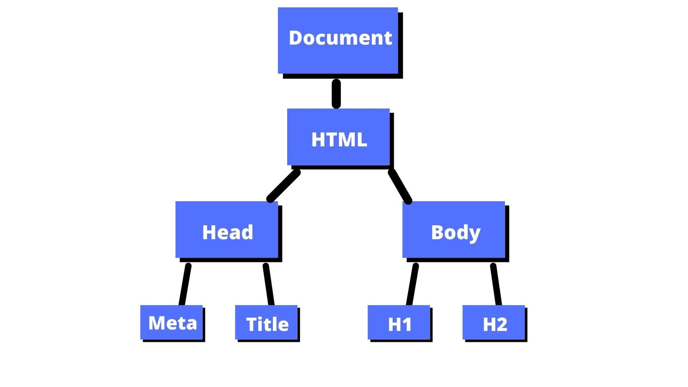

Difference between HTML, CSS, and JS:
You can think of these three as the skeleton, the skin, and the muscles of a website. HTML gives structure to a website and defines the content, CSS provides the styling, and JS provides the interactivity.
Control flow and loops:
Control flow is how a computer runs code from the top to bottom. Code is generally run from the first line to the last line. This can change if the computer runs into a statement that changes the control flow, like conditionals, functions, and loops.
A real-world example of this would be watching something on a streaming service. When you have a show to watch you will generally watch the episodes in order. If you finish a particular show, or run our of episodes, you look/loop through the list of shows until you find another one that catches your eye.
The DOM:
The DOM is what ties our HTML, CSS, and JavaScript together. It is the most important tool we can use while working on HTML documents.
The DOM (Document Object Model) is the structure of a web document, as displayed by your browser. It is made up of nodes, a node is anything and everything in the DOM. These nodes can be elements, attributes text content etc. The object hierarchy starts with a global window object, then the document object. The document object is the gateway to HTML elements, which is what we mainly work with.
Example of how we might interact with it:
We interact with it using JavaScript. It allows us to find HTML elements by class or id and then manipulate them using JavaScript. We can change the text in p elements or execute functions after a button is clicked.
document.getElementById('element')
document.getElemetnByClassName('element')
Difference between accessing data from arrays and objects:
Objects are mainly used to represent something that is made up of a set of characteristics. The characteristics are called properties and consist of a key and a value. We use the keys to access the information in our objects with either dot or bracket notation.
Dot notation is mainly used, but bracket notation can be handy if we want to include spaces or start with numbers, as bracket notation only requires property identifiers to be a string.
Arrays are used whenever we want to create and store a list of multiple items in one variable.
Arrays use zero-based indexing, so the first item in an array has an index of zero. We use the position of items in the array to access the data.
What are functions:
Simply put, a function is a block of code that’s designed to perform a particular task. They need to be called to be executed.
Functions are the workhorses of JavaScript. Instead of having to type out the same code multiple times, functions allow you to store a bit of code that does a single task in a defined block and call it whenever you need with just a short command.